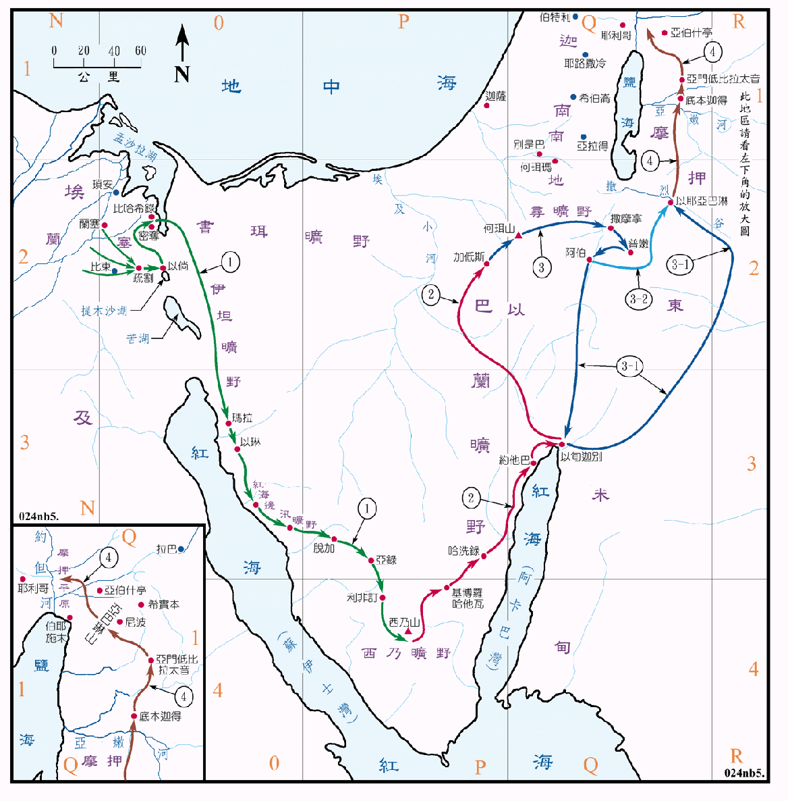

1446～1406BC

行动线说明
| 序号 | 圣经 | 说明 |
|---|---|---|
| 1 | 民33:5-15 | 出埃及到西乃山。 |
| 2 | 民33:16-36 | 从西乃山到加低斯。 |
| 民33:36 | 以色列人在旷野飘流四十年。 | |
| 3 | 民33:41-44 | 从何珥山到以耶亚巴琳。其中自阿伯到以耶亚巴琳的一段，可能有两条不同的路线，分别用3-1和3-2来表示。 |
| 4 | 民33:45-49 | 从以耶亚巴琳到亚伯什亭。 |
民数记的第卅三章，记载了全部自埃及到迦南的安营地，共有四十二处。现将全部的路线分为四段，出埃及到西乃山为第一段，用绿色线表示；从西乃山到加低斯为第二段，用红色线表示；然后在旷野飘流三十八年，再从加低斯起到以耶亚巴琳为第三段，以蓝色线表示；最后一段是从以耶亚巴琳到亚伯什亭，用咖啡色线条表示。在西乃半岛的旅途中，大多数地名的位置不明，仍有待继续查考，不明的原因计有：
因系短暂驻留，故不可能留下千馀年后尚可查考的痕迹。
地名常因政治或宗教的原因更改，而且不易考证。
地名因城镇荒芜而失传。
其中仍然有些地点的地名和位置仍然是可靠的，不但能得到多数学者的认同，也经考古学的证实，诸如加低斯、以旬迦别、普嫩等。另外也有一些地方是相当的可靠，部份学者也能认同，诸如玛拉、以琳、利非订、哈洗录、约他巴、阿伯及以耶亚巴琳等。在撒烈溪以北地区的各安营处，其位置都十分的明确。
第一、二段的路程，如按传统和大多数学者的意见，把西乃山定在西乃半岛的南端，则问题不多。至於第三段，也有如<民图三>同样的问题，其中的普嫩的位置已有考古学家的证实，也经绝对多数的学者认同。所以其路线可能有两条：其一是到阿伯后沿亚拉巴谷南下到阿卡巴湾，再绕过以东的东境到撒烈溪；另一条则是从阿伯往东，直接到以耶亚巴琳。
过撒烈谷之后，进行的路线与<民图三>不同，并未记载征服两个亚摩利王的国的事。